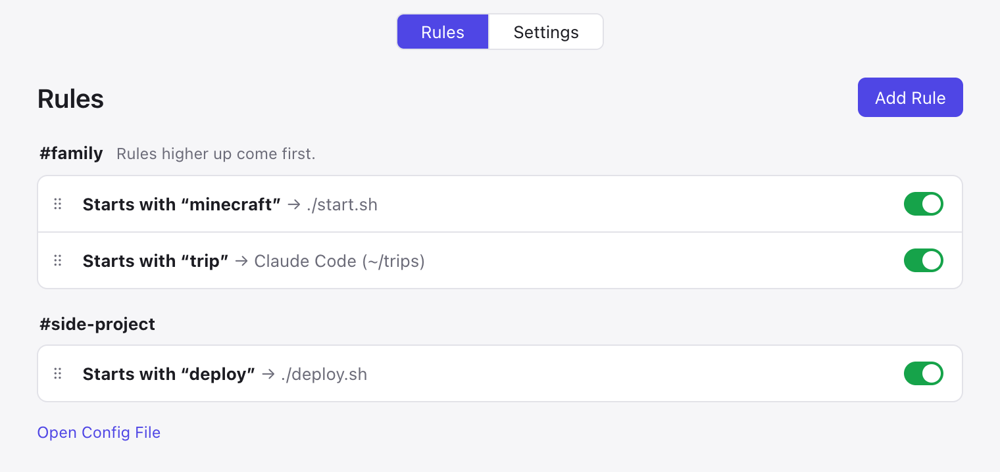
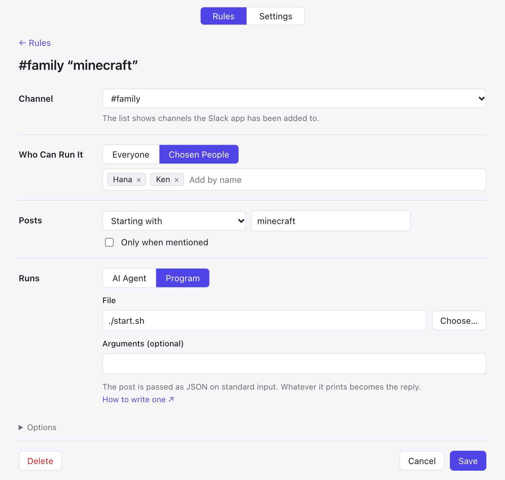
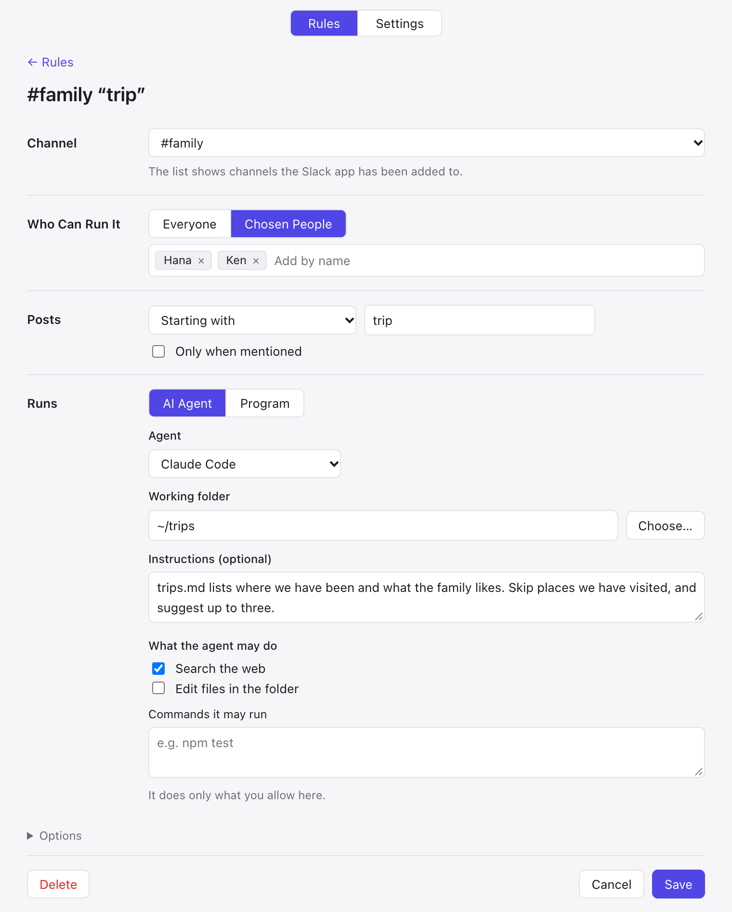

Post in Slack to run things on your Mac. No bot code to write.
Every new job for a Slack bot usually means more routing and reply code. With SockDock, you add a rule and point it at a program.
brew install --cask iwamatsu0430/tap/sockdockSockDock is not notarized by Apple, so opening it for the first time takes an extra step. How to open it
See what runs, in one list
In your own bot, which post runs what, and who may run it, is something you learn by following the code. In SockDock, each job is a rule in one list, and you check and change it on screen.
@app.message(re.compile("^minecraft")) def minecraft(message, say): if message["user"] not in FAMILY: return ... @app.message(re.compile(r"^deploy\b")) def deploy(message, say): if message["user"] != KEN: return ... @app.message(re.compile("^trip")) def trip(message, say): ... # call the AI agent, carry on the thread

- SockDock handles the Slack sideConnecting, routing posts, the 👀 reaction, replying in the thread, and carrying on the conversation there. It uses Socket Mode, so there's no public URL.
- Rules decide who can run it, and what it can doUnless you limit it, anyone who can post in the channel can run a rule. The post never runs as a command. An AI agent can do only what you allow.
Use cases
The three rules in the list above.


Set up in three steps
- Create a Slack appA button in SockDock opens Slack's create page with the scopes, Socket Mode and events filled in. Create the app, install it to your workspace, and add it to the channels you'll use.
- Paste its two tokensGenerate an App-Level Token (
xapp-) with theconnections:writescope, and paste it into SockDock along with the Bot Token (xoxb-). Both are kept in your Mac's Keychain. - Add a ruleIn SockDock, choose a channel, which posts, and what runs.
In Slack
- When a post matches a rule, 👀 appears; when it's done, 👀 goes away and the reply shows up in the thread.
- Reply in the thread to continue with the same rule — no keyword needed. The AI agent remembers the conversation.
A little more detail
From Claude Code or Codex, you can add and change SockDock's rules over MCP. Setup is a single copy from “MCP” in SockDock's settings. When an AI agent changes a rule, your Mac shows a notification.
Add a rule: when someone posts “deploy” in #side-project, run ./deploy.sh. Only I can run it.
Added a “deploy” rule to #side-project. Only Ken can run it.
Files attached to a post or a follow-up in the thread are passed to the AI agent or program too. You can ask the AI agent to “look at this screenshot.”
Besides the menu bar app, there's a CLI. Run sockdock service install and SockDock is registered as a service: it starts at login and restarts if it crashes.
Opening it for the first time
SockDock is not notarized by Apple, so the first time you open it, macOS stops it with “SockDock” Not Opened.
- Click Done (not Move to Trash).
- Open System Settings → Privacy & Security, scroll down and click Open Anyway.
- When asked again, click Open. From then on it opens normally.
This allows SockDock only; the rest of your Mac's protection stays on. Homebrew checks the download against the checksum recorded in the tap before installing it. Apple Support: Safely open apps on your Mac